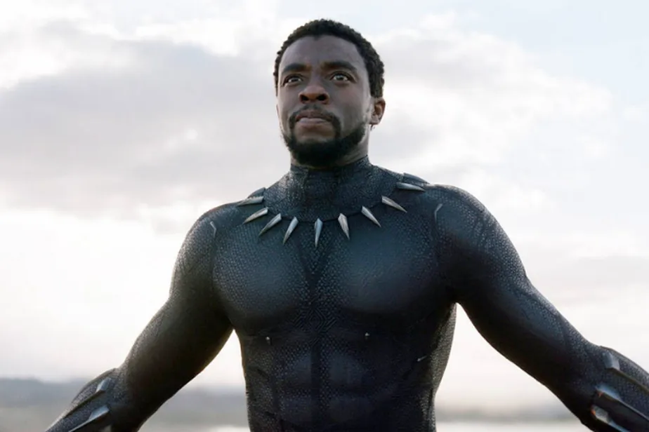
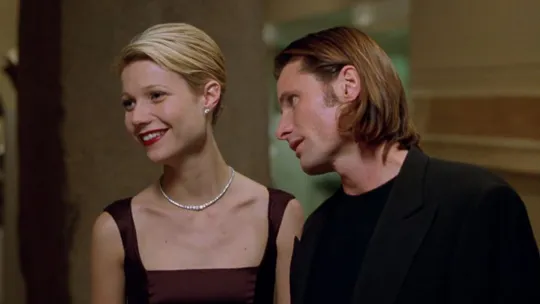

Globo de Ouro
Globo de Ouro 2023: confira a
lista de premiados da 80ª edição
Cinema

Diretor de 'Pantera Negra' quase desistiu
de sequência após morte de Boseman
TV e Streaming

Gwyneth Paltrow faz 50 anos: 6 filmes
e uma série de sua carreira para assistir'